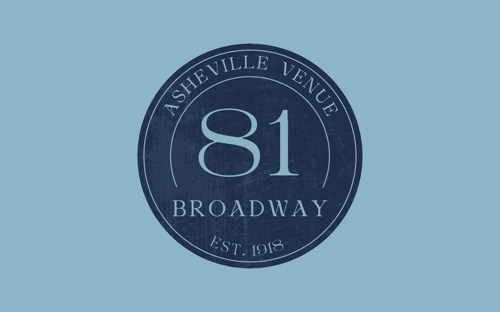
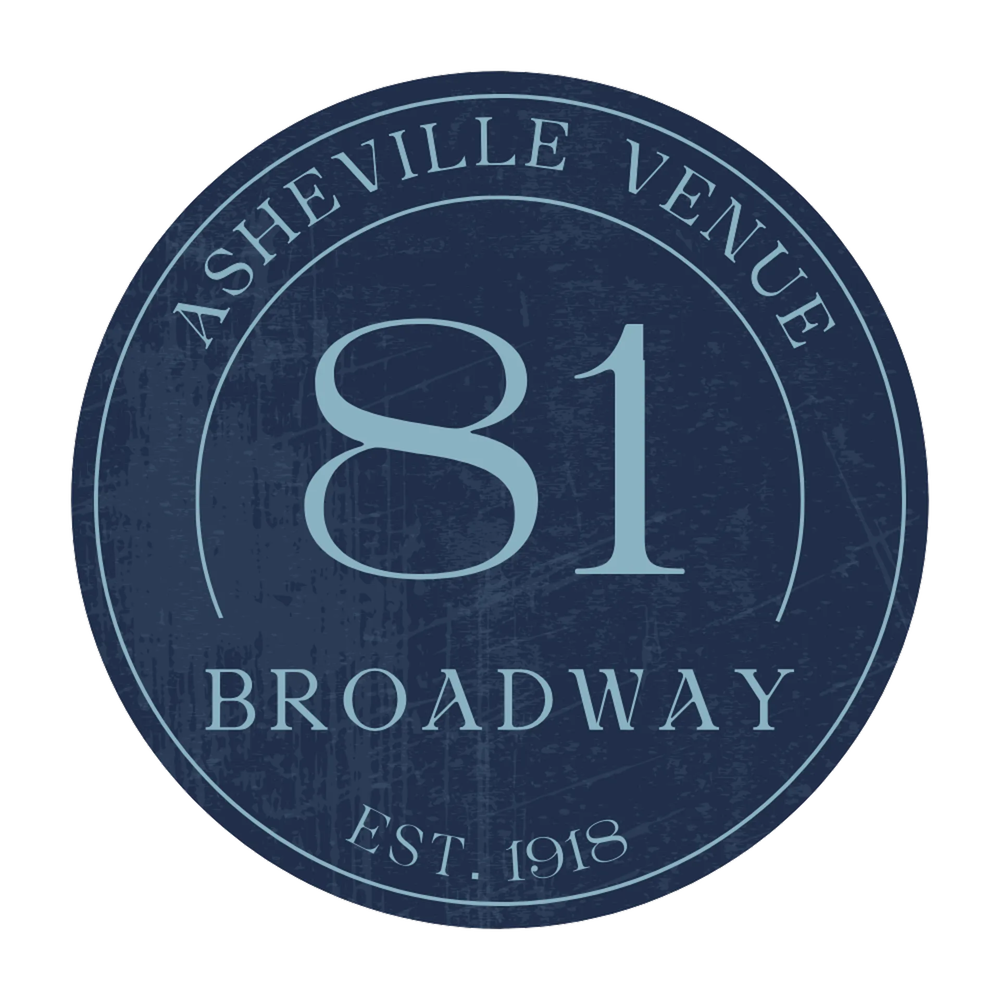
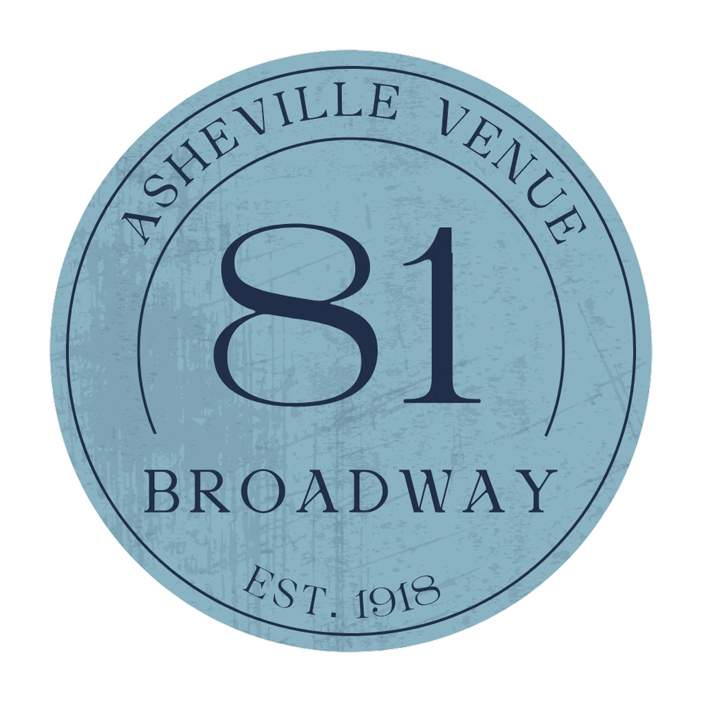
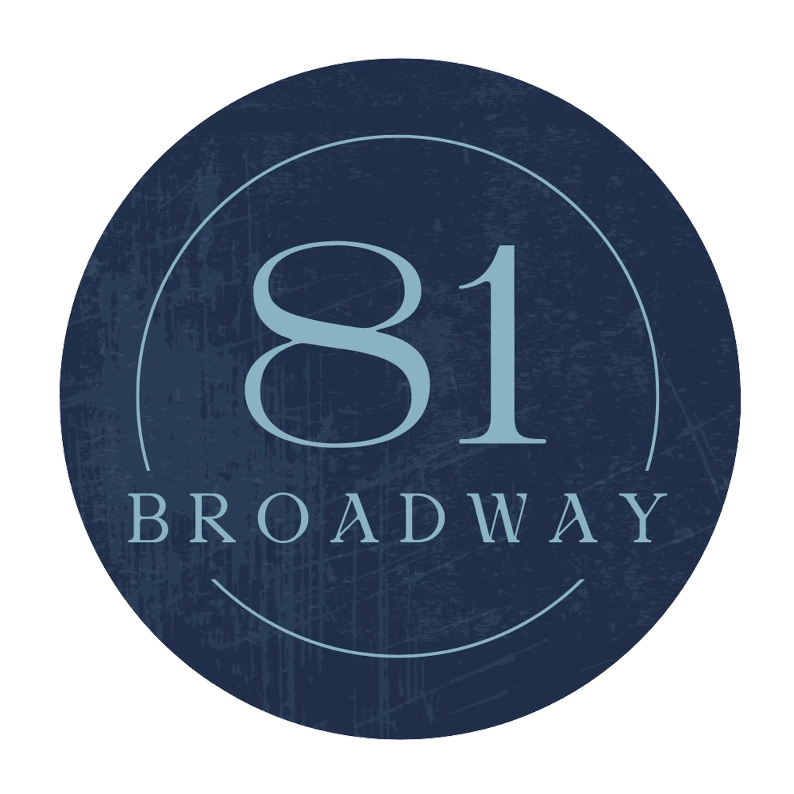
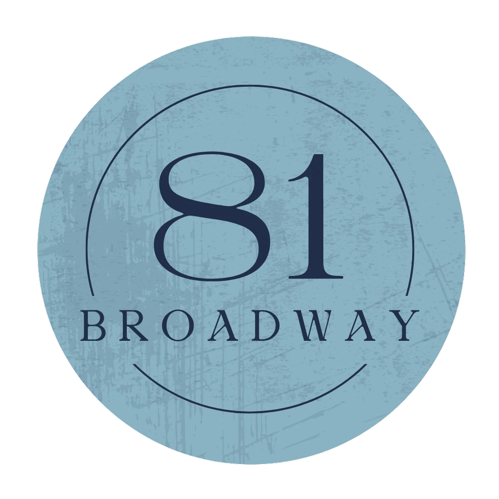
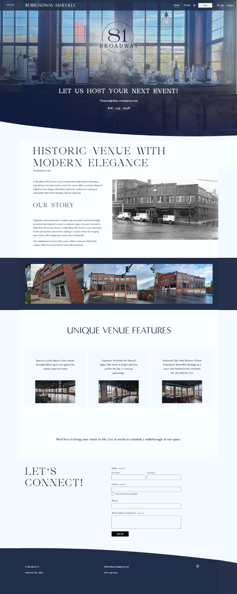

81 Broadway AVL
Timeless Events
Brand Identity · Logo Design · Landing Page Build · Venue Marketing Materials
I developed the independent brand identity for 81 Broadway, creating a high-end logo, Squarespace landing page, and venue marketing materials to position it separately from its sister brand, Mojo Coworking. This work elevated the space into Asheville's event venue market while maintaining clear brand differentiation within a shared building.

Overview
81 Broadway is an event venue space in downtown Asheville owned by the same team behind Mojo Coworking. Unlike Mojo's coworking brand, the owners wanted 81 Broadway to position itself independently as a venue for upscale dinners, weddings, cocktail events, and gatherings, targeting a completely different demographic. I was brought in to refine and elevate their rough branding concept into a high-end, venue-specific identity.
Discovery & Strategy
The owners had a basic draft vision but lacked the execution to position the space competitively within Asheville's saturated event venue market. Recognizing the gap between their intent and the market standard, I worked to:
- Translate their raw ideas into a sophisticated, polished brand aesthetic
- Align the venue's identity with the high expectations of event coordinators, wedding planners, and luxury clientele in Asheville
Creative Execution
I designed and developed:
- A custom logo blending classic Art Nouveau influences with a distressed, textured aesthetic to honor Asheville's historic, artistic vibe while feeling timeless and elegant
- A simple, elegant Squarespace landing page to serve as the venue's primary digital presence, fully branded to the new visual style
- Print signage and co-branded wayfinding materials for the shared Mojo and 81 Broadway building, ensuring clear differentiation between the coworking and venue spaces while maintaining site coherence
Reflection
This project was about strategic visual differentiation: building a brand that lived in the same physical space as Mojo but spoke a completely different design language. It required subtlety, precision, and deep understanding of brand perception, particularly in a competitive, experience-driven market like Asheville's event industry.
Key Contributions
- Full brand development for a distinct event venue identity
- Logo design with classic and contemporary blending for upscale positioning
- Squarespace landing page build and layout development
- Creation of on-site signage and environmental design elements to differentiate audience pathways
Gallery






